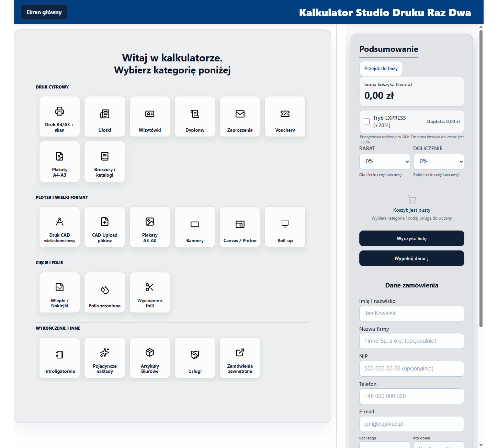

Uporządkuj procesy, odzyskaj czas.
DELIVERY · AUTOMATYZACJA PROCESÓW · WDROŻENIA CYFROWE
Powtarzasz te same czynności, choć dawno mogłyby dziać się same? Buduję rozwiązanie, które oddaje Ci ten czas — bez chaosu i ręcznej roboty.

DELIVERY · AUTOMATYZACJA PROCESÓW · WDROŻENIA CYFROWE
Powtarzasz te same czynności, choć dawno mogłyby dziać się same? Buduję rozwiązanie, które oddaje Ci ten czas — bez chaosu i ręcznej roboty.

Uporządkowanie skomplikowanego procesu wyceny i składania zamówień.

Sklep internetowy i identyfikacja marki zbudowane od zera — spójna komunikacja wizualna i uruchomiona sprzedaż online.

Strona i sklep, które uporządkowały ofertę i wdrożyły sprzedaż online. Projekt zrealizowany; dziś dostępny jako wersja archiwalna.
Trzy rzeczy, które robię tak, żeby pasowały do Twojego procesu — nie do gotowego pakietu z cennika.

Dla firm, które chcą uporządkować ofertę i zamienić stronę w czytelne narzędzie sprzedaży.
Dla zespołów, które tracą czas na ręczne działania, przeklejanie danych i powtarzalne zadania.

Dla firm, które potrzebują jednego partnera do analizy, uporządkowania i wdrożenia zmian.
Od zrozumienia procesu do gotowego rozwiązania jasno, etapami i bez chaosu.
Rozpoznaję realny problem i ustalam priorytety: co uprościć, przyspieszyć albo zautomatyzować.
Projektuję rozwiązanie dopasowane do firmy i składam całość w spójny produkt.
Testuję, wdrażam i przekazuję gotowe narzędzie z instrukcją — żeby dało się działać samodzielnie od pierwszego dnia.
Projektuję i wdrażam rozwiązania cyfrowe od analizy procesu po działające narzędzie — aplikacje, automatyzacje i strony dla firm. Pracuję jako jeden odpowiedzialny wykonawca, bez przekazywania projektu między rękami.
Zaczynam od diagnozy procesu, projektuję rozwiązanie dopasowane do zespołu, wdrażam je i przekazuję z instrukcją — gotowe do samodzielnego użycia.
Naturalnie rozwijam się w stronę Project & Delivery Management — to już dziś robię przy każdym wdrożeniu: planuję zakres, adresuję ryzyko i odpowiadam za efekt końcowy.
Tak, jeśli chcesz uporządkować proces, uprościć stronę, wdrożyć automatyzację albo połączyć te obszary w jeden spójny system działania. Najczęściej współpracuję z firmami, które czują, że da się pracować szybciej, prościej i z mniejszym chaosem, ale brakuje im czasu albo partnera, który przeprowadzi to od początku do wdrożenia.
Zaczynamy od krótkiej rozmowy i poznania Twojej sytuacji: co dziś nie działa, co chcesz uporządkować i jaki efekt chcesz osiągnąć. Na tej podstawie proponuję najlepszy kierunek działania, zakres współpracy i kolejne kroki.
To zależy od zakresu projektu. Prostsze działania można zamknąć w krótszym czasie, a bardziej złożone wdrożenia wymagają podziału na etapy, ale zawsze na początku ustalamy realistyczny plan i priorytety, żeby było wiadomo, co dzieje się najpierw i kiedy można oczekiwać efektów.
Tak — nie kończę pracy na rekomendacjach czy samej koncepcji. W zależności od projektu mogę przygotować rozwiązanie, uporządkować proces i przejść do wdrożenia technicznego, tak żeby całość była spójna i gotowa do działania.
To zależy od zakresu projektu. Na początku ustalamy priorytety, etapy i realistyczny harmonogram, żeby od razu było wiadomo, co robimy i kiedy możesz spodziewać się efektów.
Odpowiadam w ciągu 24 godzin. Sprawdzę, co warto uporządkować i zaproponuję najlepszy kierunek działania.
Co zyskujesz we współpracy
Nie tylko projekt, ale prosty proces, mniej niejasności i pewność, że rozwiązanie naprawdę zadziała.
Jeden numer, zero zgadywania
Nie ganiasz kilku osób i nie sprawdzasz, kto teraz za co odpowiada. Dzwonisz do mnie i sprawa idzie dalej.
Mniej chaosu, szybsze decyzje
Ustalamy priorytety, porządkujemy proces i przechodzimy do działania bez zbędnych rund.
Projekt i wdrożenie w jednym procesie
Nie kończysz z samą koncepcją. Otrzymujesz rozwiązanie, które da się realnie wdrożyć.
Rozwiązania dopasowane do pracy zespołu
Proces ma działać w praktyce, nie tylko dobrze wyglądać na diagramie.